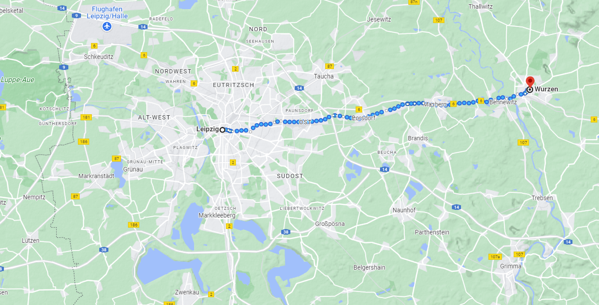
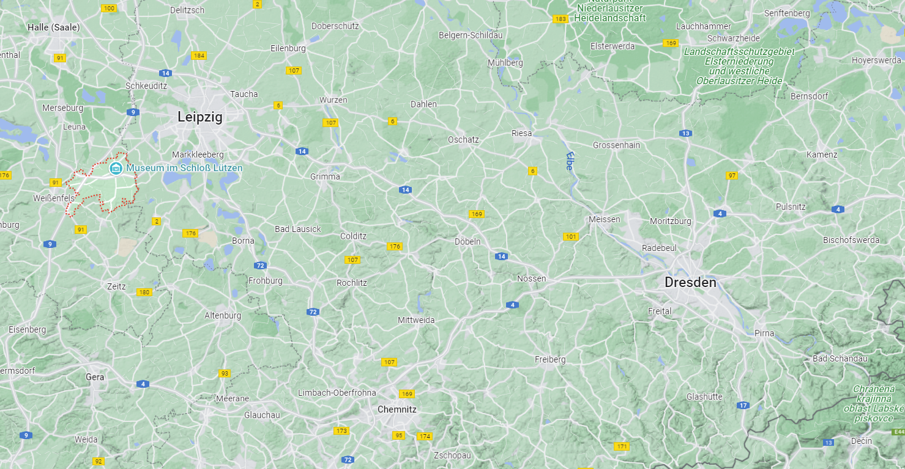
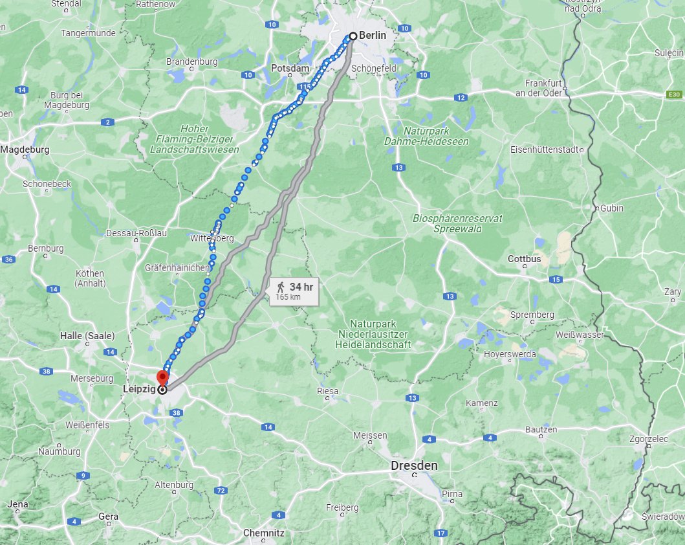
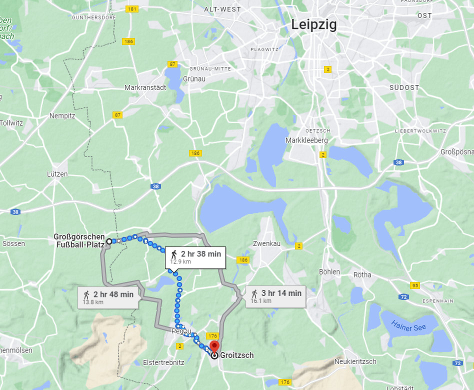

뤼첸 전투 (11) - 이긴 거야, 진 거야?
게시: 2022-11-14T06:30:14+09:00
나폴레옹 시대에는 아직 세균의 존재 자체를 몰랐고 따라서 소독이라는 개념도 없었으며 항생제 따위는 물론 존재하지 않았습니다. 그러다보니 전쟁터에 나간 군인은 언제나 전사보다는 병사의 가능성이 훨씬 높았고, 그냥 찰과상에 불과한 가벼운 부상도 재수가 없으면 치명상으로 발전할 수 있었습니다. 연합군 전체의 브레인이라고 할 수 있던 샤른호스트가 바로 그런 희생자였습니다. 그는 이 날 전투에서 유탄에 발에 맞아 부상을 입었는데, 처음에는 그냥 가벼운 부상일 뿐 대단한 것은 아니라고 다들 생각했지만, 거의 2달 뒤인 6월 말, 협상을 위해 오스트리아를 방문했을 때 결국 그 부상이 악화되어 숨을 거둡니다. 그러나 최소한 전투 당일 밤이나 그 후 며칠 동안에는 기본적인 사무를 보는 것에는 아무런 지장이 없었습니다. 그런 그가 전투 직후 작성한 보고서를 보면 그는 그 날의 전투가 사실상 승리라고 확신하고 있었습니다. "6시~7시 사이에 나는 다리에 부상을 입고 전투 현장에서 후송되었다. 좌익(스타지들 마을 쪽)에서는 전황이 어땠는지 알지 못하지만, 내가 본 것은 거기서도 상당한 거리를 전진했다는 것이다. 따라서 전투는 우리의 승리였다. 난 아직 그 이후의 결과를 모른다. 다만 적은 배후에 있는 라이프치히를 점령했다. 저녁 경에 러시아군 본대로부터 증원군이 도착했고 밀로라도비치의 군단도 접근하고 있었다. 전투가 끝났을 때 우리는 전투 현장 뿐만 아니라 우리가 점령한 모든 땅을 다 점령하고 있었다." 그러나 샤른호스트 본인이 인정했듯이, 그는 7시 이전에 이미 전선에서 후송되었으므로 나폴레옹의 근위대가 밀고 나온 저녁 무렵의 상황을 다 알 수는 없었습니다. 실제로 연합군 병사들, 특히 프로이센군 병사들의 사기는 나쁜 편이 아니라고들 했습니다. 하지만 밤 9시 이후 짜르와 프로이센 국왕이 물러간 모나쉔휘겔 언덕의 사령부에 비트겐슈타인이 주요 군단장들을 소집하여 부대 현황을 들어보니 꽤 다른 그림이 그려졌습니다. 그 날 대부분의 부대들이 격전을 치르느라 많은 사상자가 발생했고 혼란과 낙오, 극심한 피로로 인해 다음 날 다시 싸울 형편이 아니었습니다. 물론 자이츠(Zeitz)에서 하루 종일 대기만 하고 있던 밀로라도비치의 러시아군은 다음 날 전투에 투입이 가능했고, 저녁 늦게야 현장에 도착한 러시아 황실 근위대와 토르마소프의 예비대도 상대적으로 피해가 덜 했으므로 또 전투에 동원될 수 있었습니다. 그러나 이들의 숫자는 1만5천~2만에 불과했습니다. 그에 비해 저녁 무렵에 전투 현장에 나타난 외젠의 엘베 방면군 병력은 거의 4만이 넘었습니다. 프랑스군은 5월 2일 전투에서도 분명히 수적 우위를 가지고 있었는데, 그 다음 날 전투에서는 더 큰 우위를 가지게 된다는 뜻이었습니다. 더 좋지 않은 소식도 있었습니다. 러시아군의 탄약 수송대가 아직 엘스터 강을 건너지 못했다는 보고였습니다. 따라서 내일 다시 전투가 벌어지면 연합군 포병대는 상대적으로 조용할 수 밖에 없었고, 보병대는 오전까지만 총을 쏘고 오후에는 총검으로만 싸워야 할 형편이었습니다. 그러나 결정적으로 비트겐슈타인에게 후퇴 결정을 강요한 것은 그런 논의를 하던 중에 날아온 클라이스트(Friedrich Heinrich von Kleist) 장군의 보고서였습니다. 그 내용은 외젠 휘하 로리스통의 제5 군단을 막아서던 그의 부대가 라이프치히에서 무려 30km나 떨어진 뷔르젠(Wurzen)까지 후퇴했다는 것이었습니다.

(클라이스트가 라이프치히에서 밀려나 뷔르젠으로 후퇴한 것은 30km나 되는 거리도 문제였지만, 묄더 강을 건너서 후퇴했다는 것이 더 문제였습니다.)
애초에 클라이스트의 병력으로는 로리스통을 포함한 외젠의 엘베 방면군을 막을 수 없었으므로 라이프치히가 프랑스군 손에 넘어가는 것은 어쩔 수 없다는 것이 원래의 계산이었습니다. 그러나 라이프치히를 내주고서라도 나폴레옹의 옆구리 깊숙한 곳에 연장질을 하는 것이 이 전투의 목적이었는데, 여기 뤼첸에서도 전황이 그다지 유쾌하지 않은 것은 계산 밖의 일이었습니다. 게다가 비트겐슈타인은 클라이스트가 라이프치히를 지키지는 못하더라도 최소한 로리스통과 치열하게 대치해주기를 기대했는데, 아예 뮐더(Mulde) 강 동쪽 강변인 뷔르젠으로 후퇴한 것은 클라이스트가 프랑스군의 추격을 피해 뮐더 강을 너머 탈출했다는 것을 뜻하는 것이었습니다. 특히 러시아군에게 더욱 심각했던 문제는 이제 연합군이 여기서 나폴레옹과 대치하는 동안, 로리스통을 선두로 한 프랑스군은 교통망의 중심지인 라이프치히를 통해 드레스덴으로 직행할 수 있게 되었다는 것이었습니다. 그러면 러시아군이 최악의 경우라고 생각하고 있던 시나리오, 즉 드레스덴을 비롯한 엘베 강변의 다리들을 프랑스군이 점령하여 러시아군은 본토와의 교통로를 잃고 독안에 든 쥐가 된다는 뜻이었습니다. 물론 프로이센군에게는 나폴레옹이 그대로 북동쪽으로 내달려 비텐베르크 또는 토르가우를 건너 베를린을 들이친다는 시나리오가 더 나빴습니다.

(나폴레옹과 비트겐슈타인은 라이프치히 남서쪽의 뤼첸에서 대치하고 있었지만, 라이프치히에서 뻗어나가는 도로망은 저 남동쪽의 드레스덴으로도 곧장 이어졌습니다. 드레스덴과 그 바로 북서쪽의 마이센을 점령당하면 러시아군의 퇴로는 중립국인 오스트리아 밖에 없었습니다.)

(러시아군은 나폴레옹이 뒷길로 드레스덴을 들이칠까 걱정했지만 프로이센군은 나폴레옹이 전혀 다른 방향인 베를린을 칠까 두려워했습니다.)
비트겐슈타인은 어디까지나 러시아 장군이었고, 그에게는 다른 무엇보다 본토와의 교통로, 즉 드레스덴 확보가 가장 중요했습니다. 그는 후퇴를 결정하고 이 소식을 짜르와 프로이센 국왕에게 알리기 위해 말을 달렸습니다. 그러는 사이 비트겐슈타인의 승인을 받은 블뤼허는 프로이센군 기병대 약 1천기를 이끌고 4개 마을을 점거한 프랑스군 안쪽으로 야습을 감행했습니다. 지친 몸을 땅바닥에 내던지고 잠을 자던 프랑스군은 깜짝 놀랐고 프로이센 기병대는 4개 마을 안쪽 깊숙한 곳까지 밀고 들어와 고함을 질러댔습니다. 이들은 나폴레옹이 처소 바로 근처까지 돌격해 들어왔습니다만 어차피 낮에도 말을 달리기에는 다소 부적합했던 거친 지형을 밤에 달리는 것은 무리였으므로 큰 피해는 입히지 못했고, 프랑스 보병들의 사격보다는 어둠 속 울퉁불퉁한 지형에서 말이 넘어지는 바람에 적지 않은 사상자를 내고 후퇴했습니다. 그러나 이들의 공격은 프랑스군으로 하여금 연합군의 기세가 살아있다는 것을 보여주었으므로, 다들 다음 날 다시 전투가 벌어질 것을 믿어 의심치 않게 했을 뿐만 아니라 프랑스군 병사들이 푹 쉬지 못하고 뜬눈으로 경계하도록 하는 효과를 낳았습니다. 한편, 밤 늦게 그로이츠쉬(Groitzsch)에 있는 군주들의 숙소를 찾아간 비트겐슈타인은 후퇴해야 한다는 괴로운 소식을 알렉산드르에게 먼저 전했습니다. 알렉산드르도 러시아인이었으므로 드레스덴이 위험하다는 소식에 후퇴의 불가피성을 쉽게 이해했습니다. 그러나 프리드리히 빌헬름은 러시아인이 아니었습니다. 프로이센 국왕은 이미 잠자리에 든 뒤였으므로, 알렉산드르가 직접 프리드리히 빌헬름의 숙소를 찾아가 후퇴해야 한다는 소식을 전했습니다. 그 날 사실상의 승리를 거두었다고 생각하며 잠자리에 든 프리드리히 빌헬름에게는 그야말로 아닌 밤 중의 홍두깨였습니다. 그는 잠옷차림으로 담요를 덮고 침대에 앉아 짜르의 설명을 들었는데, 이야기를 듣고 난 뒤에도 알렉산드르에게 차갑게 이렇게 말했습니다.

(짜르와 국왕이 자기들끼리만 편히 쉬러 갔다고 비난하기는 좀 그렇습니다. 그로이츠쉬는 정말 작은 농촌 마을이고, 4개 마을 전투 현장에서 약 10km 정도 밖에 떨어져 있지 않습니다. 아마 알렉산드르와 프리드리히 빌헬름은 각각 작은 농가 하나씩을 점거하고 있었을 것입니다.)
"확실한 건 우리가 일단 후퇴하기 시작하면 절대 엘베 강에서 멈추지 않고 비스와 강을 건너게 될 거라는 겁니다. 이런 식으로 저는 또 메멜(Memel, 지금의 리투아니아 제3의 도시인 클레이페다)까지 피난을 떠나는 신세가 되겠군요." 짜르는 프로이센 국왕에게 보급선 문제를 장황하게 설명했지만 프리드리히 빌헬름은 일단 알겠다며 알렉산드르를 방에서 내보낸 뒤, 침대에서 벌떡 일어나 이렇게 분노에 찬 고함을 질렀다고 합니다. "이건 아우어슈테트의 패전 수준이쟎아!" 짜르와 프로이센 국왕, 러시아군과 프로이센군의 갈등은 이때부터 심각하게 돌아갔습니다. 특히 프리드리히 빌헬름이 블뤼허를 비롯한 프로이센 장군들을 직접 만나본 뒤에는 그 골이 더욱 깊어졌습니다. 항상 그렇듯, 용기와 기백만 앞서는 블뤼허는 '후퇴라니 말도 안된다, 프랑스군의 피해가 훨씬 커서 나폴레옹이 후퇴를 고려해야 할 판국이다'라고 주장했고, 뷜로와 클라이스트는 자신들이 후퇴한 것은 비트겐슈타인이 후퇴를 결정했기 떄문에 어쩔 수 없는 일이었다고 보고했기 때문이었습니다. 프리드리히 빌헬름은 알텐부르크에서 샤른호스트를 만나 이야기해본 뒤에야 후퇴라는 현실을 받아들였습니다. 그리고 이 후퇴는 꽤 길고 불쾌한 파장을 낳았습니다. Source : The Life of Napoleon Bonaparte, by William Milligan Sloane Napoleon and the Struggle for Germany, by Leggiere, Michael V